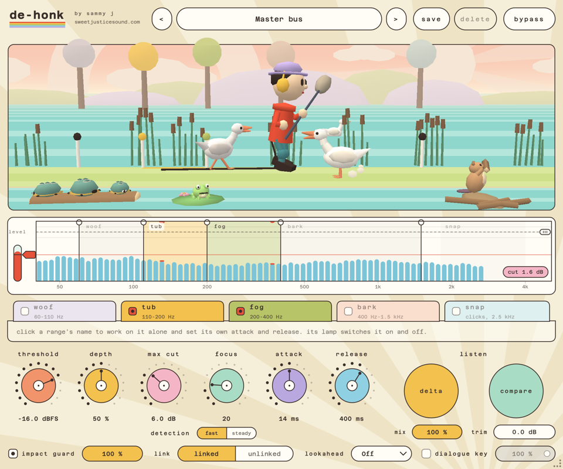
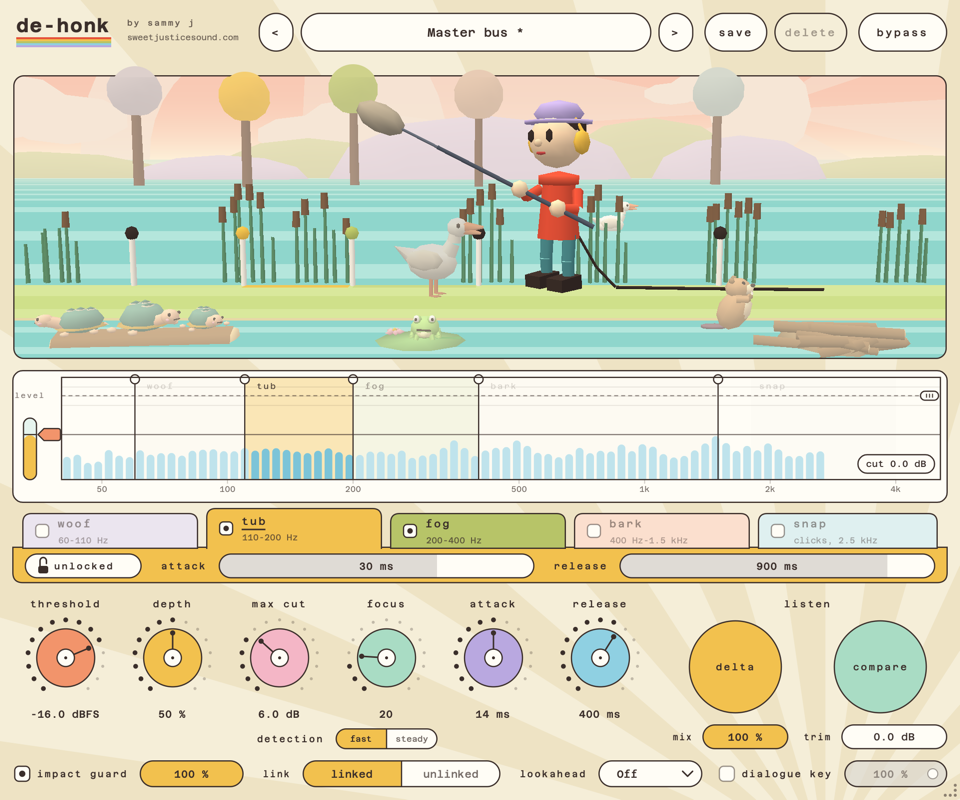
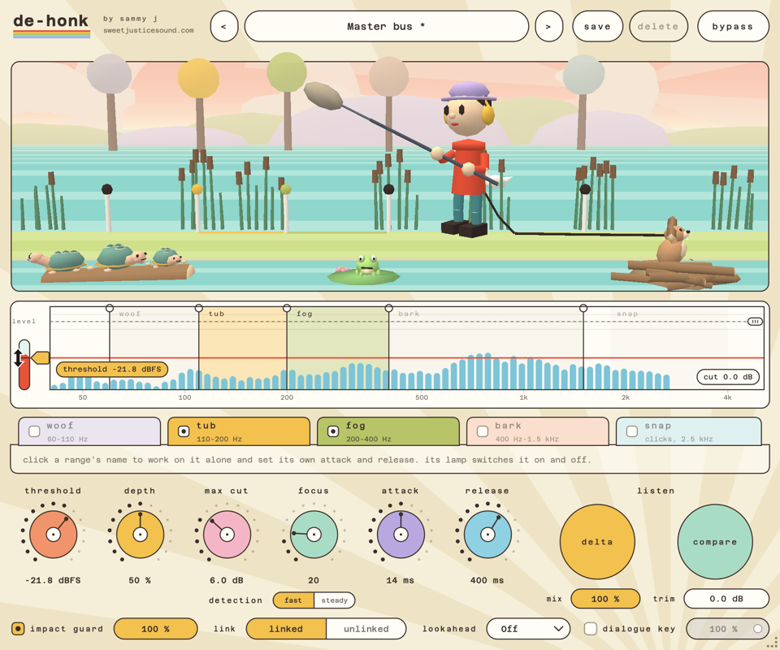
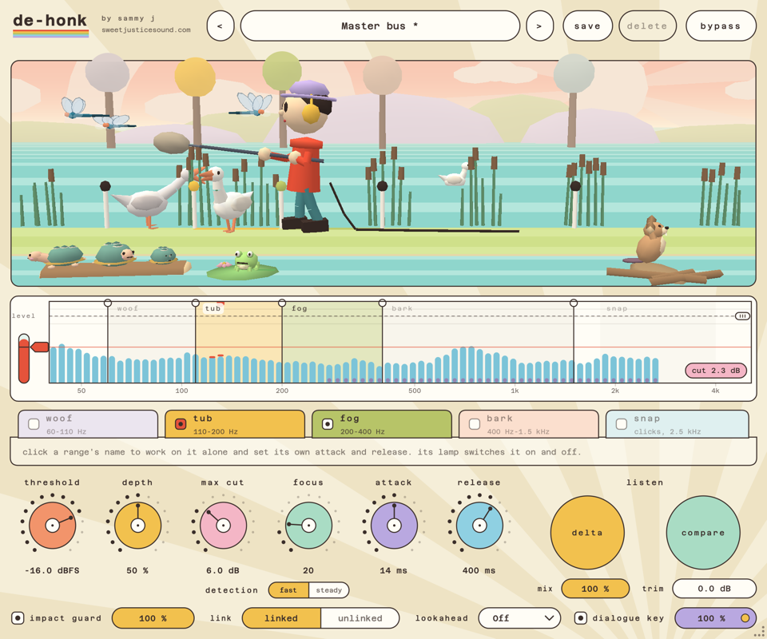
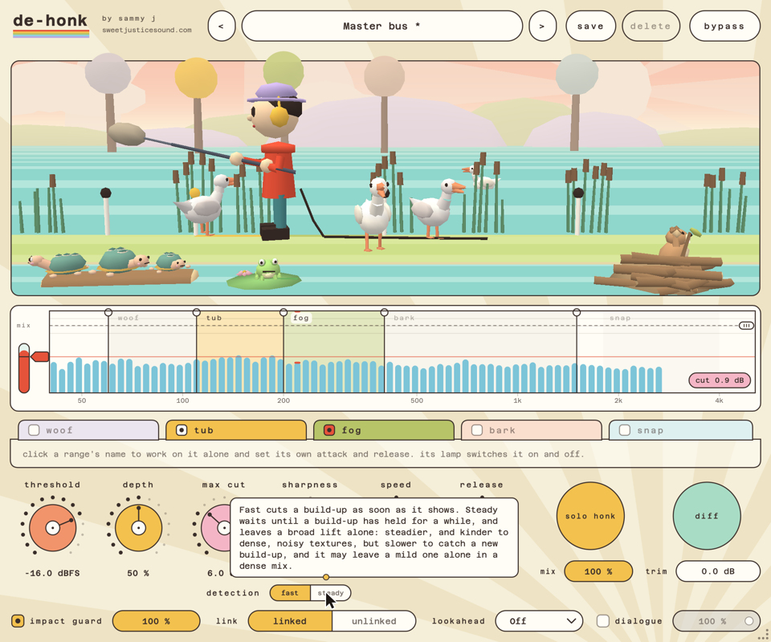
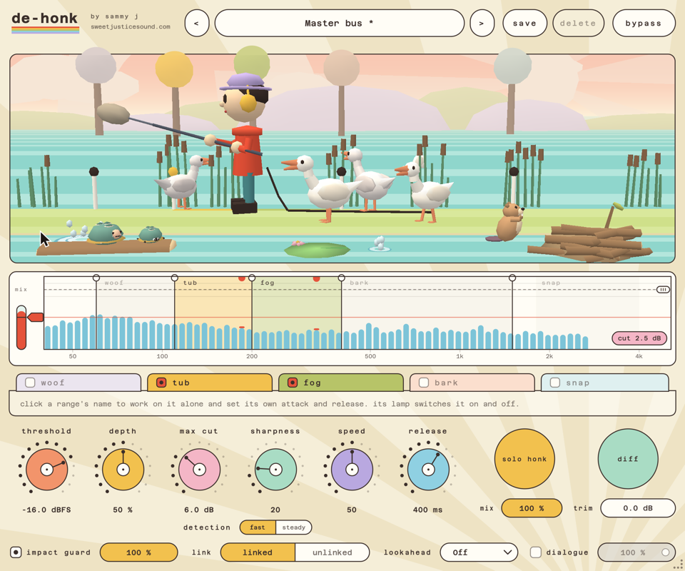
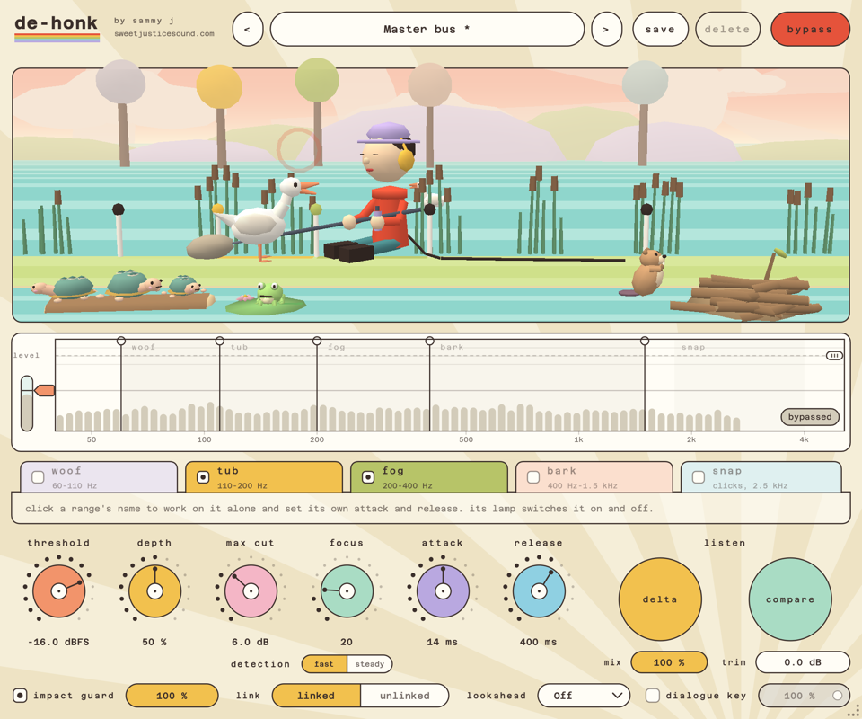

de-honk
Thanks for trying De-Honk. It goes on the master bus of a trailer mix, before the limiter. When lots of the sounds and music in a session have each been through a bass enhancer or a saturator, their added harmonics pile up in the low mids as a boxy, nasal build-up. De-Honk listens for that as the mix plays and takes it down with narrow cuts that come and go with it.
It's meant to be gentle: a few dB at most, mostly in the busy sections. It works in mono, stereo and surround up to 7.1.4, as AAX, VST3 and AU, and as a standalone app.
download
If a link above isn't there yet, the build is still being made: try again shortly, or see all releases. The plug-ins on their own are on the release page. Hosts list it as SammyJs De-Honk. The installers remove the first test build's files. To the host it is still the same plug-in, so a session saved with an earlier test build should open with it in place: if one doesn't, please tell us which host.
new in 0.0.4
Pro Tools now lists De-Honk under EQ in its plug-in menus, instead of Other. Nothing else changes from 0.0.3.
new in 0.0.3
Mostly new names, so the controls are easier to find. What they do hasn't changed, and sessions from 0.0.2 come back as they were.
- Solo Honk is now Delta; Diff is now Compare. They sit under a small "listen" caption. See listen below.
- Speed is now Attack, shown as a time, 5 to 40 ms. Turned up in the window, the attack is slower. In a host's automation lane and on a control surface it runs the other way round: higher is a shorter attack. The time shown is right either way.
- Sharpness is now Focus, and Dialogue is now Dialogue Key.
- Each range tab shows its frequencies under its name, and follows the edges when you drag them. Snap's reads "clicks, 2.5 kHz".
- Two presets are renamed: Heavy is now Master bus, heavy, and Narrow resonances only is now Narrow focus only.
- In a host's automation list the range switches read Woof On, Tub On and so on, the edges start with Edge, and Link is Channel Link.
- The recordist and the animals are livelier.
new in 0.0.2
- Dialogue sidechain. Route the dialogue stem to the plug-in's sidechain (the key input in Pro Tools) and switch Dialogue Key on with its square lamp. A band the dialogue accounts for is then left alone, and build-up well above it is still cut; with Snap on, so is a click that is the dialogue's. The bar sets how far. The stem can arrive at any level: De-Honk finds it in the mix and works out how loud the dialogue is there. Keep it in time with the mix, within a few milliseconds. The round lamp at the end of the bar is lit while the stem is arriving, and turns red if the stem can't be found in the mix or is most of it.
- Detection: fast or steady. The pill under the knobs. Fast cuts a build-up as soon as it shows. Steady waits until a build-up has held for a while and leaves a broad lift alone: steadier, and kinder to dense, noisy textures, but slower to catch a new build-up, and in a dense mix it may leave a mild one alone. The Master bus, steady preset is the defaults at Steady.
- Drag it in the band view. The Threshold (the grip on the level bar at the left, or its line across the bands) and Max Cut (the dashed line across the top) can be dragged, like the edges between the ranges. The pointer changes over anything that can be dragged. A double-click puts it back.
- Ranges are tabs. Woof, Tub, Fog, Bark and Snap sit on a shelf under the band view, each in its own colour. A tab's lamp switches the range on and off, and its dot turns red while the range is cutting. A click on the name selects the range: only its creatures move in the pond, and the band view fades the others. Click the name again to go back to all of them.
- A range's own attack and release. With Woof, Tub, Fog or Bark selected, its lock, attack and release are under the shelf. Locked, the range follows Attack and Release, and the two bars show what those come to. Unlocked, they are its own.
- Link. Linked, Grouped or Unlinked. Grouped is for surround: the front pair, the centre, the surrounds and the heights each share their cuts.
- Impact Guard. The square lamp before its name is now its switch. It turns the guard off and on again at the amount it had, and fills with yellow while the guard is up.
- Compare (called Diff in 0.0.2) fades over and back, so it no longer clicks, and its level follows the treated output all the time, so where nothing is cut the two match.
- The pond runs at 60 pictures a second and is calmer: geese arrive one at a time and stay a while, and the recordist works on one of them, turning before he walks to it. The trees stand at the range edges, above the handles in the band view. The animals can be clicked: a turtle topples into the water, the frog jumps, a goose tumbles away.
- New name. It shows in hosts as SammyJs De-Honk. Sessions from 0.0.1 should still load it; please report it if one doesn't.
- The window. Tooltips wait a second and open beside the control. Menus and dialogs are in the window's own style. Click the name for the About page, which has a button that checks for a newer build.







how it was made
De-Honk was tuned by ear on trailer mixes, with measurements to back up what we heard:
- What causes honk. We measured what bass enhancers actually add (mostly second and third harmonics, roughly 100 to 300 Hz above the bass) and how that piles up when many sounds in a session each have one.
- How it decides. It splits the low mids into narrow bands, one per semitone, and looks for bands that stand out from their neighbours while the mix is loud. It leaves a band alone when there's a real note underneath it, so a note's own pitch is kept and only the harmonics piled on top are reduced.
- Tuning. The settings were set by listening to our own trailer mixes that had a bit of honk, comparing them with De-Honk on and off and soloing what it took out, until it removed the build-up without taking the weight. Mixes signed off by clients don't have much honk, so it's gentle by design.
- Checking it doesn't do harm. It was run over a library of finished trailer mixes, with their dialogue stems and real hits from their effects stems, to check that it keeps the weight of impacts, leaves dialogue alone and doesn't pump or click. There are also 51 automated tests for things like latency, clicks, surround and the dialogue sidechain.
- What it can't know. It can't tell low-mid weight you wanted from build-up you didn't. That's a matter of taste, and it's the main thing your listening will tell us. The rules will be adjusted from what you report.
what counts as honk
De-Honk works from a definition rather than from learning: honk is a narrow band in the low mids, roughly 120 to 500 Hz, that stands out from the bands either side of it while the mix is loud, with no real note underneath it to explain it. That is what bass enhancers leave behind. Each one adds harmonics above the bass, and across hundreds of sounds those harmonics pile up in the same few places. Whether what it catches is what you would call honk is exactly what this test is for.
how we got here
- Start from the cause. Before touching a mix, we measured a popular bass enhancer (plug-in A) on its own with test tones: what it adds, where and how much. It mostly adds second and third harmonics, about 100 to 300 Hz above the bass. That set where De-Honk looks, and why it leaves a band alone when a real note sits under it: keep the note, lose what was piled on top.
- Our honky mixes, by ear. We found a handful of our own mixes with a bit of honk in them. They were signed off, so it is mild. The first versions cut wide slabs out of the low mids and took out what sounded more like noise and detail than honk. Listening to those turned it into narrow cuts, made it act mainly in the busy, loud moments, and gave it a threshold, with the default taken from how loud those mixes run.
- How other tools do it. We measured two de-resonating plug-ins as black boxes, signals in and out, nothing copied. Plug-in B uses fixed, very narrow notches driven by level. It showed that narrow cuts sound like honk coming out, where wide cuts sound like the mix losing body, which is why De-Honk's cuts are about a semitone wide. Plug-in C turned out to be built for music and single sources: it works higher up on fixed bands, and does more on quiet passages and dialogue than on busy ones. That told us what not to copy. It also pointed at three things we did add as controls: Max Cut, a slower Release, and Impact Guard.
- Finished trailer mixes. Around fifty finished trailer mixes, with their dialogue, music and effects stems, were used to check for harm rather than to define honk. Dialogue on its own passes through, real hits from the effects stems keep their weight, and it does not pump or click. We also measured how much it still cuts on mixes that did not need it: less than it used to, but not nothing.
- Ideas from other fields. We tried four detection techniques from outside audio mixing on the same real mixes: echo cancelling (predicting the low mids from the bass), fitting a baseline under the spectrum as is done in chemistry, morphological filtering from image processing, and tracking resonant poles as in speech analysis. None of them tells a honky mix from a clean one any better than De-Honk already did; in trailers, sharp, lasting peaks are mostly the music's notes. Two of them did agree on one useful thing: a narrow peak should be watched for about a second before it is believed, and a broad lift is not a peak. That became the Steady setting of Detection.
- What did not work. We tried making clean and honky copies by running an enhancer across whole stems, to score it automatically. That is not how a trailer is built, since enhancers go on individual sounds, so we dropped it. It did show something worth saying: no measurement we have reliably tells a honky mix from a clean one. That judgement is still a matter of taste, and that is where your ears come in.
setting up
- Put it on the master, before your limiter, and start with the Master bus preset.
- Lookahead Off (the default) adds no latency, so it's fine on a live mix.
- Set Threshold so the level bar on the left of the band view goes past its grip in the dense sections and stays under it in the quiet ones. Drag the grip, or use the knob. It only works above the threshold.
- If you have the dialogue stem to hand, send it to the sidechain and switch Dialogue Key on. The input is called Dialogue: in Pro Tools it's the key input at the top of the plug-in window (choose it with the transport stopped), in Logic the Side Chain menu, in VST3 hosts the plug-in's sidechain. Keep the stem in time with the mix. The round lamp at the end of the Dialogue Key bar lights when the stem arrives; red means it can't be found in the mix, or the key is the mix itself.
- Leave everything else at default for a first pass. If it cuts more than you like in dense passages, or you can hear it moving, try Detection at Steady (or the Master bus, steady preset) and tell us which you preferred. Steady is slower to catch a new build-up, so give it a few seconds.
what it should do
- In the loud, dense parts (big music plus effects), the low mids should open up: less boxy, less honky, the mix feeling less clogged.
- The bass and the weight should stay where they were.
- Quiet passages and dialogue on their own should pass through untouched.
what to listen for, most important first
- Lost weight. Does the bass or the body of the mix get thinner with it on? Use Compare: hold it to hear the untreated mix, or click it to latch.
- Hits. Do explosions, slams and big drum hits keep their punch and their tail? Impact Guard is meant to keep the cuts out of them. If a hit sounds smaller, note the time.
- Rumble and dense textures. It can sometimes cut into noisy low-mid material (rumbles, wind, dense ambiences) as if it were honk. If something thick suddenly sounds hollow, that's what to report, and whether Steady does better there.
- Dialogue. Does the voice get thinner with it on? Try it with the dialogue stem on the sidechain and without, and say which you used. With the stem on, the small dots under the band view's bars show which bands are being left to the voice.
- Audible working. Can you hear it moving: pumping, a wobble or a ringing in the low mids? Release sets how slowly a cut lets go; longer is steadier. If only one range does it, select that range, open its lock and give it its own release.
- Does it actually help? On a mix you know has honk, does it get it? If it isn't doing enough, raise Depth or set Max Cut to 8 or 9 dB. If it's too much, bring Depth down.
listen
The two round buttons beside the knobs, under "listen". One works at a time, and the band view says which you're hearing.
Plays only what's being removed: the difference between in and out, like a solo of the cuts. It should sound like ugly, boxy low mids. If you hear wanted bass, notes or dialogue in it, it's taking the wrong thing; tell us what and where.
Plays the untreated mix, latency-matched and level-matched, for an A/B of before and after. Hold it, or click it to keep it on.
the picture
The pond at the top shows what it's doing, so you can glance at it rather than watch it.
- geeseThe cuts. They arrive one at a time and stay a few seconds. The sound recordist works on one at a time. Click one and it tumbles away and waddles back.
- treesStand at the edges of the ranges, above the handles in the band view, each in the colour of the range to its right.
- turtlesHide in their shells when Impact Guard holds back for a hit, and sleep when it's off. Click one and it topples into the water.
- frogTenses as a cut nears Max Cut, and leaps off its lily pad when one reaches it. Click it and it jumps.
- beaverIts dam grows while the low mids stay clogged. Click it and it waves or slaps its tail.
- fishJumps when Snap takes out a click.
- dragonfliesCome out while the dialogue sidechain is being listened to. Click them and they scatter.
- weatherClouds and then rain when it's kept hard at work for a while.
- recordistSits down with a flask in Bypass, listens closely in Delta, looks from side to side in Compare. Click him and he tips his hat or waves.
With a range's tab selected, only that range's creatures come, go and move; the rest stay where they are, faded back. The pointer becomes a hand over anything that can be clicked. None of it changes the sound.
please send back
- What you used it on: host and version, sample rate, and the layout (stereo, 5.1, 7.1.4 and so on).
- Your settings, if you changed them.
- A short bounce of the same section with De-Honk on and off, with the times where it helped or hurt.
- Anything that glitched: clicks, dropouts, high CPU, the window misbehaving, or Pro Tools refusing to load it.
known in this build
- The dialogue sidechain hasn't been tried in Pro Tools or Logic yet. If the key input doesn't appear, or the Dialogue Key lamp doesn't light with a stem routed to it, tell us which host.
- The message about a newer version only appears for full releases. For a newer test build, click the name and press Check for updates.
- In Pro Tools, choose the key input with the transport stopped: the output may drop out for a moment as it connects.
- Automation of Link written with the first test build no longer does anything: Link is now a choice of three, and a session comes back as Linked or Unlinked from what Link was set to when it was saved.
- Typing a preset's name in the plug-in's window hasn't been tried in a host. If the keys don't arrive, or Space starts the transport, tell us which host.
- How the new names look in a host's automation lanes and on a control surface hasn't been checked. Some start with the same word (Woof ..., Dialogue Key ...), so a surface that shortens names may show two the same: tell us if one does.
- In a host's automation lane and on a control surface Attack runs the other way round from the knob in the window: higher is a shorter attack. The time shown is right either way. Tell us if that gets in the way.
- Compare's level match follows the treated level over a second and a half, so on a real mix the two can differ by a few tenths of a dB from moment to moment.
- Settings and presets may change before the full release, so sessions saved with this build may not sound the same in a later one.
de-honk 0.0.4 · a plug-in by samuel justice · sammy j